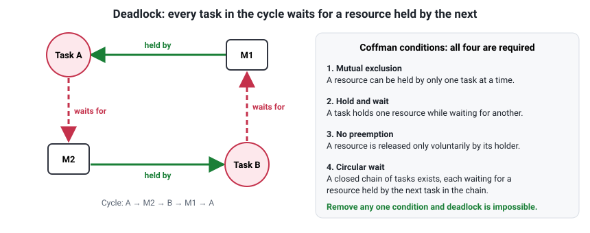

Mutual exclusion and deadlock
Locks fix race conditions and introduce a new failure: tasks that wait for each other forever. Deadlock has a precise set of preconditions, and that precision is what lets you design it out instead of testing for it.
- Define a race condition and the requirements a correct mutual-exclusion mechanism must meet.
- Define deadlock and state the four Coffman conditions precisely.
- Read a resource-allocation graph and recognise a deadlock cycle.
- Apply one practical firmware technique to break each Coffman condition.
- Distinguish deadlock from livelock and starvation, and recognise deadlocks that involve queues and semaphores rather than mutexes.
Mutual exclusion
Race condition: a defect in which the result of a computation depends on the relative timing or interleaving of concurrent contexts accessing shared state, at least one of them writing.
Mutual exclusion: the guarantee that at most one context executes a given critical section at any time.
A correct mutual-exclusion mechanism must satisfy three requirements:
- Mutual exclusion: no two contexts are in the critical section at the same time.
- Progress: if the section is free and some contexts want to enter, one of them enters; the decision is not postponed indefinitely.
- Bounded waiting: once a context has asked to enter, there is a bound on how many times others may enter before it does.
A kernel mutex satisfies all three between tasks, provided every access uses it. Deadlock is a violation of progress that appears when tasks hold more than one lock, or wait for something while holding one.
Deadlock
Deadlock: a state in which each task of a set is blocked waiting for an event that only another task of the same set can cause. None of them can ever proceed.

The four Coffman conditions
Coffman, Elphick and Shoshani (1971) showed that a deadlock can occur only if all four of the following hold at the same time:
| Condition | Precise statement |
|---|---|
| 1. Mutual exclusion | At least one resource is non-shareable: only one task can use it at a time. |
| 2. Hold and wait | A task holds at least one resource while waiting to acquire another resource held by a different task. |
| 3. No preemption | A resource cannot be taken away from the task holding it; it is released only voluntarily by that task. |
| 4. Circular wait | There is a closed chain of tasks T1, T2, …, Tn in which each Ti waits for a resource held by Ti+1, and Tn waits for a resource held by T1. |
The conditions are necessary: remove any one, and deadlock is impossible. For resources with a single instance (a mutex is one), a cycle in the resource-allocation graph is also sufficient: if the cycle exists, the tasks in it are deadlocked.
A kernel mutex always satisfies conditions 1 and 3 by design: it is exclusive, and the kernel never takes it away from its owner. So in practice, firmware deadlocks are prevented by attacking conditions 2 and 4, or by changing the design so a lock is not needed at all.
Breaking each condition in firmware
| Condition | Technique | Cost |
|---|---|---|
| Mutual exclusion | Make the resource unnecessary to lock: give it a single owner (a gatekeeper task that receives requests through a queue), make the data read-only after initialisation, use atomic operations for single words, or use double buffering so readers and the writer never touch the same buffer. | Extra task and queue latency (gatekeeper); more RAM (double buffering). |
| Hold and wait | Never block while holding a lock: release before waiting on a queue or semaphore. When several locks are needed, acquire them all at once (try each; if any fails, release all and retry), or protect the group with one lock. | Code restructuring; coarser locks can reduce concurrency. |
| No preemption | Take the second lock with a timeout; on timeout, release every lock held, back off for a randomised or priority-dependent delay, and retry. The task gives up its resource, which emulates preemption. | Wasted work; possible livelock if tasks retry in lockstep; must be able to undo partial work. |
| Circular wait | Define a global lock order (assign every lock a level) and acquire locks only in increasing order. A cycle then cannot form. Document the order and check it with assertions in debug builds. | Discipline; occasionally a lock must be taken earlier than needed. |
Deadlock visualization
Interactive: build a deadlock, then break each condition
Worked example: the file system and the SPI bus
An SPI bus is shared by an external flash (holding a file system) and an LCD.
- Logger task: locks the file-system mutex, opens a file, then the flash driver locks the SPI mutex to write sectors.
- Display task: locks the SPI mutex to stream a frame and, halfway through, needs a font glyph, so it reads it from the file system: lock file-system mutex.
Order: Logger FS → SPI; Display SPI → FS. If the display task is preempted while holding SPI, just as the logger takes FS, both block on their second lock. All four conditions hold. On the bench the window is microseconds wide and never hit; in the field it happens once a week.
Fixes, one per condition:
- Circular wait: fixed order FS → SPI for everyone. The display task loads the glyph (FS, then SPI inside the flash driver, then releases both) before locking SPI for the frame.
- Hold and wait: the display task releases SPI before reading the glyph and locks it again afterwards.
- No preemption: the display task takes FS with a timeout; on timeout it releases SPI, logs the event and retries the frame.
- Mutual exclusion: an SPI gatekeeper task performs all SPI transactions from a request queue; neither task ever holds the SPI lock.
The first fix is the cheapest and the one to prefer. The last is the most robust as the system grows.
Related failures
- Self-deadlock: a task locks a non-recursive mutex it already owns, or takes a semaphore that only it would give.
- Deadlock without mutexes: Task A blocks sending to B's full queue while B blocks sending to A's full queue; or A holds a mutex and waits on a semaphore that only B gives, while B waits for the mutex. Any blocking wait is a "waits for" edge, not only lock calls.
- Livelock: tasks are not blocked but make no progress, for example two tasks that time out, back off and retry in perfect lockstep forever.
- Starvation: a task is never granted a resource because others always win, for example a low-priority task that never gets a heavily contended mutex. The system progresses, but not for that task.
Two other strategies exist in the literature. Avoidance (for example the Banker's algorithm) checks each request against a model of future needs; it is rarely practical in firmware. Detection and recovery is practical: lock timeouts that log an error, and a watchdog that resets the system if a task stops reporting. Use it as a safety net, not as the design.
Common mistakes
- Calling unknown code while holding a lock: callbacks, logging, or library functions that take their own locks create orderings you cannot see.
- Waiting forever on every lock. An infinite wait turns a design error into a silent hang. Bounded waits that report failure make deadlocks visible in testing.
- Relying on testing to find deadlocks. The window can be a few instructions wide. Prove the absence by design: lock order or no hold-and-wait.
- Fixing a deadlock by adding a delay. It only makes the window smaller.
- Ignoring queues and semaphores when analysing for cycles. Any blocking wait counts.
What this becomes in Zephyr
- The kernel does not detect deadlocks. Use
k_mutex_lock(&m, K_MSEC(n))and treat-EAGAINas a design error to log, or as the trigger for the release-and-retry pattern. k_mutexis recursive, so a thread re-locking its own mutex does not self-deadlock. Ak_semused as a lock would.- Diagnosing a hang:
CONFIG_KERNEL_SHELLprovides shell commands that list threads with their state (pending threads show what they wait on).CONFIG_THREAD_NAME=ymakes the list readable. - Recovery net: the task watchdog subsystem (
CONFIG_TASK_WDT, each thread must feed its own channel) on top of the STM32 independent watchdog (IWDG) via the watchdog driver API. - Gatekeeper designs use a
k_msgqas the request queue and a dedicated thread as the owner of the peripheral.